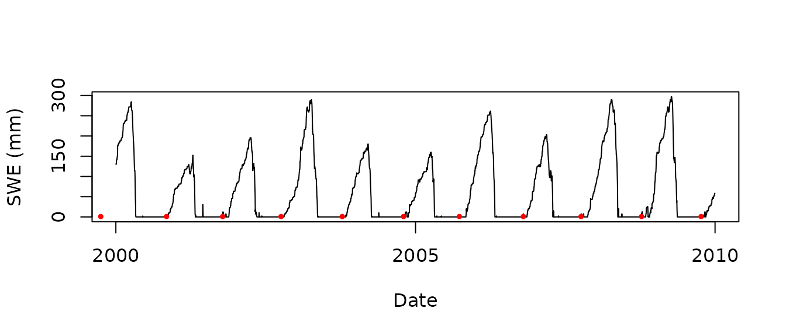

snotelr functionality
Koen Hufkens
2024-05-23
Source:vignettes/snotelr-vignette.Rmd
snotelr-vignette.RmdIntroduction
The SNOTEL network is composed of over 800 automated data collection sites located in remote, high-elevation mountain watersheds in the western U.S. They are used to monitor snowpack, precipitation, temperature, and other climatic conditions. The data collected at SNOTEL sites are transmitted to a central database. This package queries this centralized database to provide easy access to these data and additional seasonal metrics of snow accumulation (snow phenology).
Downloading site meta-data
The SNOTEL network consists of a vast number of observation sites,
all of them listed together with their meta-data on the SNOTEL website.
The snotel_info() function allows you to query this table
and import it as a neat table into R. Some of the
meta-data, in particular the site id (site_id), you will
need of you want to download the data for a site. You can save this
table to disk using the path variable to specify a location
on your computer where to store the data as a csv. If this parameter is
missing the data is returned as an R variable.
# download and list site information
site_meta_data <- snotel_info()
head(site_meta_data)
#> network state site_name description
#> 1 SNTL AK hoonah Port Fredrick-Frontal Icy Strait (190102110906)
#> 2 SNTL CA willow flat ca Upper Little Walker River (160503020103)
#> 3 SNTL MT elk peak alt Fourmile Creek (100301030104)
#> 4 SNTL MT stryker basin West Fork Swift Creek (170102100501)
#> 5 SNTL ID couch summit Lower Little Smoky Creek (170501130204)
#> 6 SNTL MT chicago ridge Rock Creek (170102131301)
#> start end latitude longitude elev county site_id
#> 1 2023-10-01 2024-05-23 58.12 -135.41 472 Hoonah-angoon 1318
#> 2 2023-09-01 2024-05-23 38.27 -119.45 2504 Mono 1317
#> 3 2023-07-01 2024-05-23 46.48 -110.72 2378 Meagher 1316
#> 4 2023-09-01 2024-05-23 48.68 -114.66 1888 Flathead 1311
#> 5 2021-10-01 2024-05-23 43.52 -114.80 2073 Camas 1306
#> 6 2022-08-01 2024-05-23 48.06 -115.70 1768 Sanders 1312Downloading site data
If you downloaded the meta-data for all sites you can make a
selection using either geographic coordinates, or state
columns. For the sake of brevity I’ll only query data for one site using
its site_id below. By default the data, reported in
imperial values, are converted to metric measurements.
# downloading data for a random site
snow_data <- snotel_download(
site_id = 670,
internal = TRUE
)
#> Downloading site: northeast entrance , with id: 670
# show the data
head(snow_data)
#> network state site_name description
#> 1 SNTL MT northeast entrance Upper Soda Butte Creek (100700010602)
#> 2 SNTL MT northeast entrance Upper Soda Butte Creek (100700010602)
#> 3 SNTL MT northeast entrance Upper Soda Butte Creek (100700010602)
#> 4 SNTL MT northeast entrance Upper Soda Butte Creek (100700010602)
#> 5 SNTL MT northeast entrance Upper Soda Butte Creek (100700010602)
#> 6 SNTL MT northeast entrance Upper Soda Butte Creek (100700010602)
#> start end latitude longitude elev county
#> 1 1937-10-01 2024-05-23 45.01 -110.01 2240 Yellowstone National Park
#> 2 1937-10-01 2024-05-23 45.01 -110.01 2240 Yellowstone National Park
#> 3 1937-10-01 2024-05-23 45.01 -110.01 2240 Yellowstone National Park
#> 4 1937-10-01 2024-05-23 45.01 -110.01 2240 Yellowstone National Park
#> 5 1937-10-01 2024-05-23 45.01 -110.01 2240 Yellowstone National Park
#> 6 1937-10-01 2024-05-23 45.01 -110.01 2240 Yellowstone National Park
#> site_id date snow_water_equivalent precipitation_cumulative
#> 1 670 1966-10-01 0.0 NA
#> 2 670 1966-10-02 7.6 NA
#> 3 670 1966-10-03 0.0 NA
#> 4 670 1966-10-04 0.0 NA
#> 5 670 1966-10-05 0.0 NA
#> 6 670 1966-10-06 0.0 NA
#> temperature_max temperature_min temperature_mean precipitation
#> 1 NA NA NA NA
#> 2 NA NA NA NA
#> 3 NA NA NA NA
#> 4 NA NA NA NA
#> 5 NA NA NA NA
#> 6 NA NA NA NACalculating snow phenology from downloaded data or data frames
Although the main function of the package is to provide easy access
to the SNOTEL data a function snotel_phenology() is
provided to calculate seasonal metrics of snow deposition.
# calculate snow phenology
phenology <- snotel_phenology(snow_data)
#> Joining with `by = join_by(date)`
# subset data to the first decade of the century
snow_data_subset <- subset(snow_data, as.Date(date) > as.Date("2000-01-01") &
as.Date(date) < as.Date("2010-01-01"))
# plot the snow water equivalent time series
plot(as.Date(snow_data_subset$date),
snow_data_subset$snow_water_equivalent,
type = "l",
xlab = "Date",
ylab = "SWE (mm)"
)
# plot the dates of first snow accumulation as a red dot
points(phenology$first_snow_acc,
rep(1,nrow(phenology)),
col = "red",
pch = 19,
cex = 0.5
)
A list of all provided snow phenology statistics is provided below.
| Value | Description |
|---|---|
| year | The year in which the an event happened |
| first_snow_melt | day of first full snow melt (in DOY) |
| cont_snow_acc | start of continuous snow accumulation / retention (in DOY) |
| last_snow_melt | day on which all snow melts for the remaining year (in DOY) |
| first_snow_acc | day on which the first snow accumulates (in DOY) |
| max_swe | maximum snow water equivalent value during a given year (in mm) |
| max_swe_doy | day on which the maximum snow water equivalent value is reached (in DOY) |